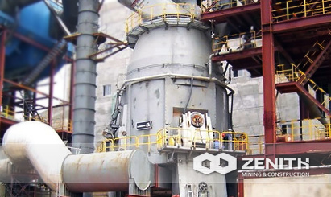
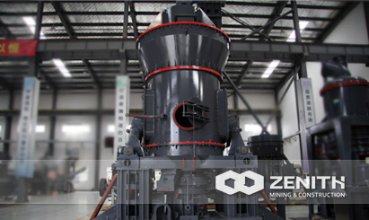
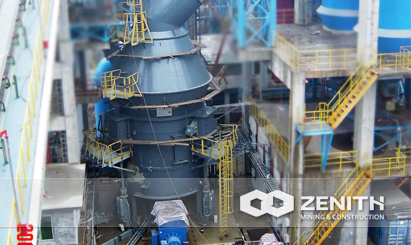
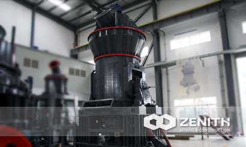

- 
- 
- 
- 
Vertical Roller Mill Operation
Vertical roller mill is one of the main features is the use of "material bed comminution" principle, in simple terms is to put the material on the disc, and then grinding roller on roller compacted, but there is a little mind is disc in drive grind roll moving, and not the contrary.
The principle of "material bed grinding" can make the grinding of the material more fully, and the grinding efficiency is higher.
Vertical Roller Mill Operation
The vertical roller mill has an advantage that made mill can in a short period of time idling is not placed on the disc material. This point in the milling industry is relatively scarce, general machine idling will be more or less wear-resistant parts between collisions caused by, lead to wear parts wear, and can even damage the machine, so in the use of the machine, the user must see whether machines can be idle, not word will not idle. In the production of flour, because the machine is often a whole production line at the same time boot, when only a device to boot, may other is not ready or need party boot, this is it is very easy to cause the machine damage. In the use of vertical grinding can be the first step to open up the mill and then open the system in the transport of material device, the material is transported to the vertical roller mill, and then grinding.
Vertical roller mill grinding roller set can be turned to use. Grinding of the general materials are mostly in grinding roller sleeve from the disc center is in the part, so this part of the grinding roller sleeve wear degree will quickly to one side of the principle of the disc center. Then in order to save money, you can roll grinding away from one side of the center of the grinding disc and close to the side of the disc center to the transposed, so that a grinding roller sleeve is used twice, saving machine in the process of operation expenses.
Vertical roller mill internal lubrication system is the thin oil lubrication, rare lubrication can not only away inside the machine accidentally into the impurities, can take in heat harmful of machine components inside the machine parts friction and lubrication, and dilute lubricating oil becoming more convenient to the lubrication and lubrication process is more time-saving and labor-saving. The lubrication system has increased the service life of the internal parts of the machine, saving the cost of the machine.
Vertical grinding mill in material is achieved by grinding roller compacted, no direct contact between the roller and the grinding disc grinding, not crash, when let the machine fault exception, so the working noise of the machine as a whole relatively low, than in a ball mill as low as 20 dB to 50 dB. Vertical roller mill grinding production system has two powder collecting device: cyclone powder collector and a bag dust collector, the powder collecting device can avoid the powder collection at the same time powder release into the atmosphere caused by air pollution, double insurance makes the vertical mill grinding production line work environment more clean.